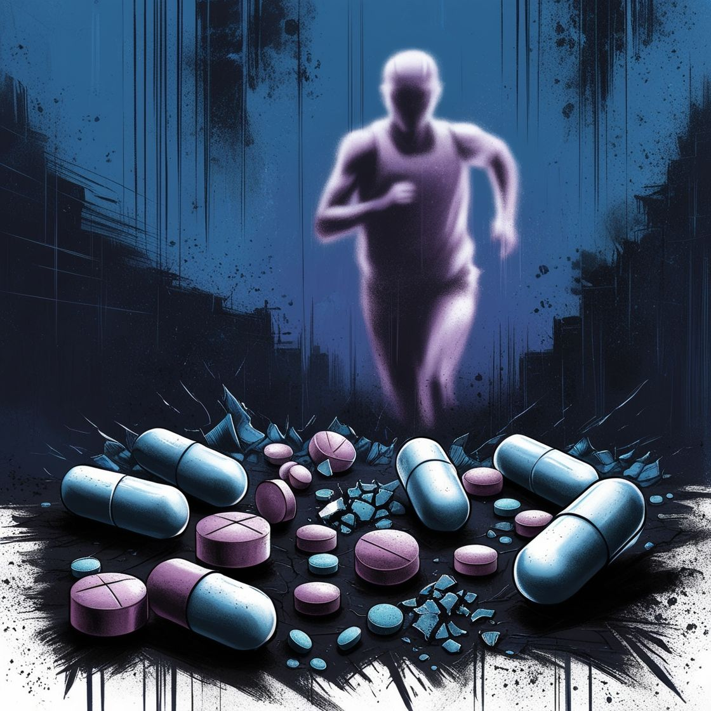

Esta página ha sido visitada 0 veces.
Dopaje en el deporte
¿QUE ES EL DOPAJE?
ALGUNOS TIPOS:
Drogas para mejorar el rendimiento:
Esteroides anabólicos: Utilizados para aumentar la masa muscular y la fuerza.
Estimulantes: Como la anfetamina y la cafeína, que pueden aumentar la energía y la concentración.
Hormonas: Como la hormona del crecimiento, que puede mejorar la recuperación y el rendimiento.
Drogas para la recuperación:
Analgésicos: Medicamentos que reducen el dolor, permitiendo a los atletas entrenar más intensamente.
Antiinflamatorios: Utilizados para reducir la inflamación y acelerar la recuperación.
Drogas para la concentración y el enfoque:
Adderall: Un estimulante que puede mejorar la atención y el enfoque en deportes que requieren concentración.
Drogas recreativas:
Algunas sustancias, como la marihuana, pueden ser utilizadas por algunos atletas, aunque su uso puede estar prohibido en competiciones.
Drogas para la pérdida de peso:
Diuréticos: Utilizados para perder peso rápidamente, especialmente en deportes donde el peso es un factor crítico.
VIDEOS INFORMATIVOS
PAGINAS INFORMATIVAS
LAS DROGAS EN EL DEPORTE
DOPAJE EN DEPORTISTAS
COMO AFECTAN DROGAS EN RENDIMIENTO DEPORTIVO
LUCHA CONTRA EL DOPAJE

Deja tu comentario
Comentarios